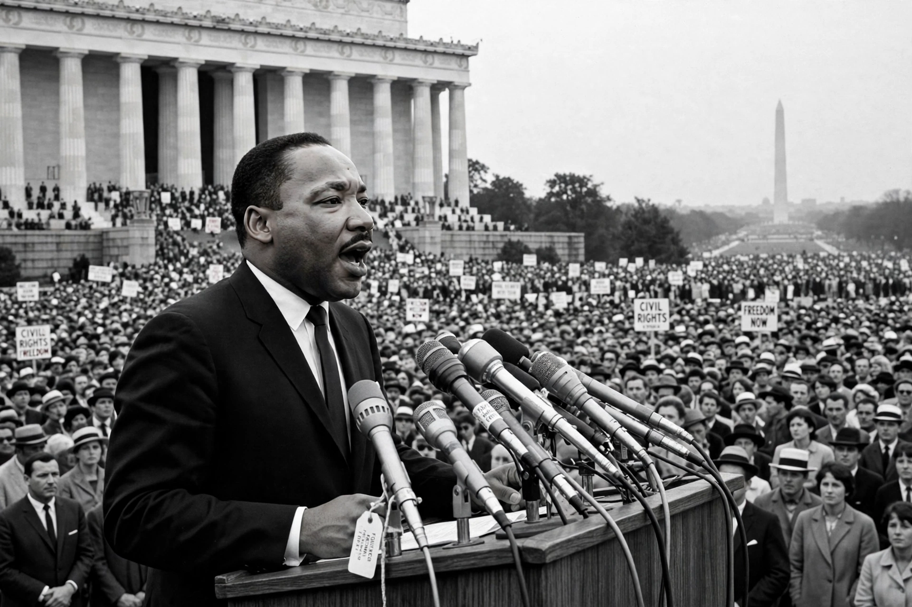

From Wikipedia, the free encyclopedia
| Martin Luther King Jr. | |
|---|---|
| Born | 15 January 1929, Atlanta, Georgia |
| Died | 4 April 1968, Memphis, Tennessee (assassinated) |
| Known for | Leader of the US civil rights movement; 'I Have a Dream' speech (1963) |

Martin Luther King Jr. was an American Baptist minister and activist who was a leader in the civil rights movement from 1955 until his assassination in 1968. He advanced civil rights for people of colour through nonviolence and civil disobedience, inspired by his Christian beliefs and Gandhi (in the wider crawl).
At the 1963 March on Washington, King delivered his 'I Have a Dream' speech before some 250,000 people — among the most famous speeches in American history. He won the Nobel Peace Prize in 1964, at the time its youngest laureate. His birthday is a US federal holiday (see Lincoln's era for the long road from emancipation).